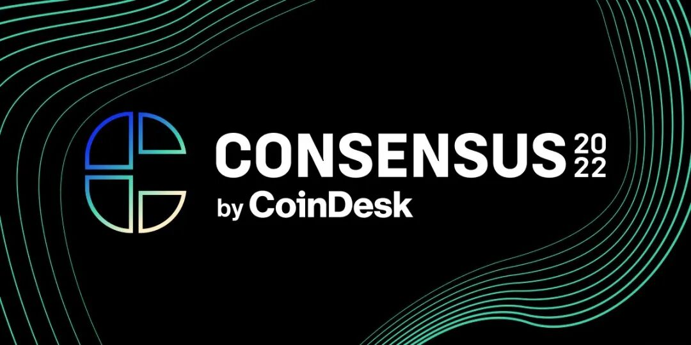
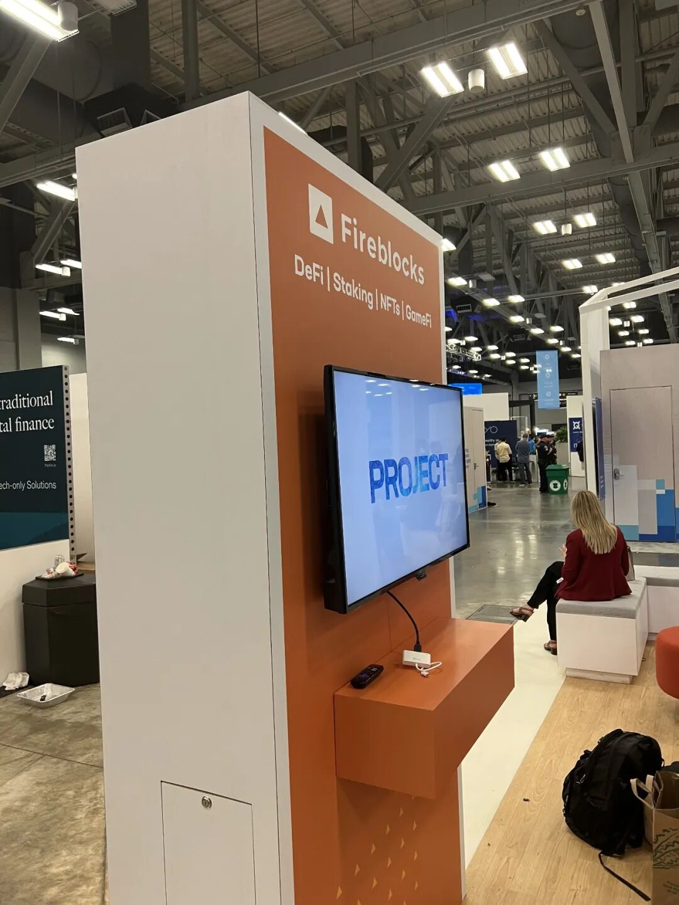
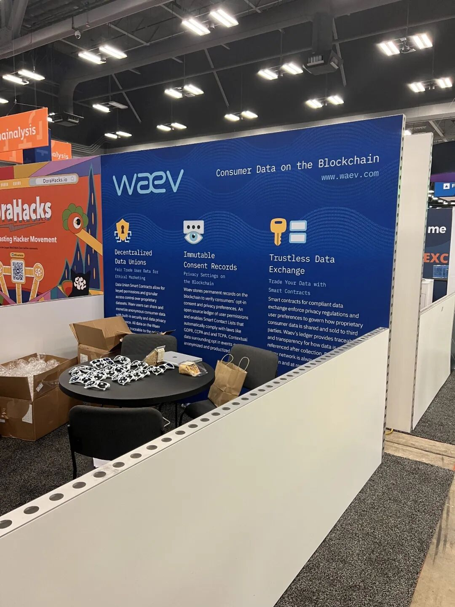
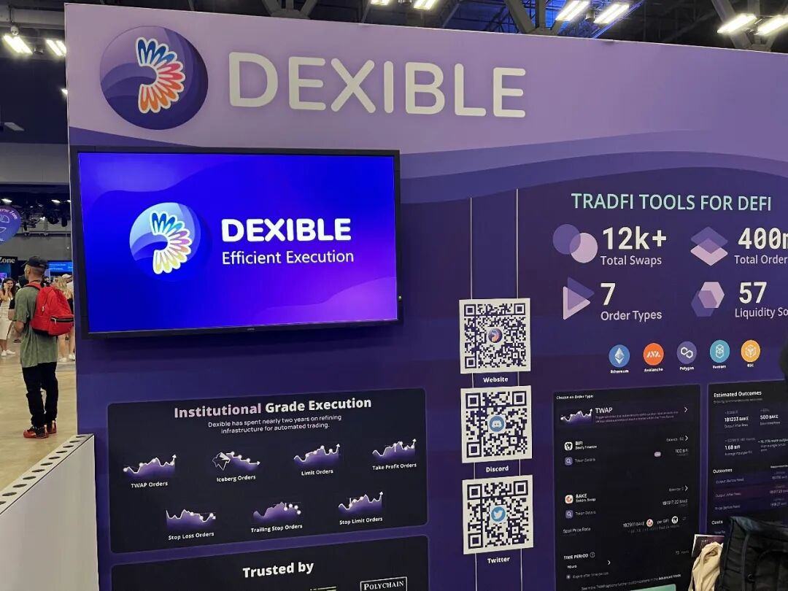
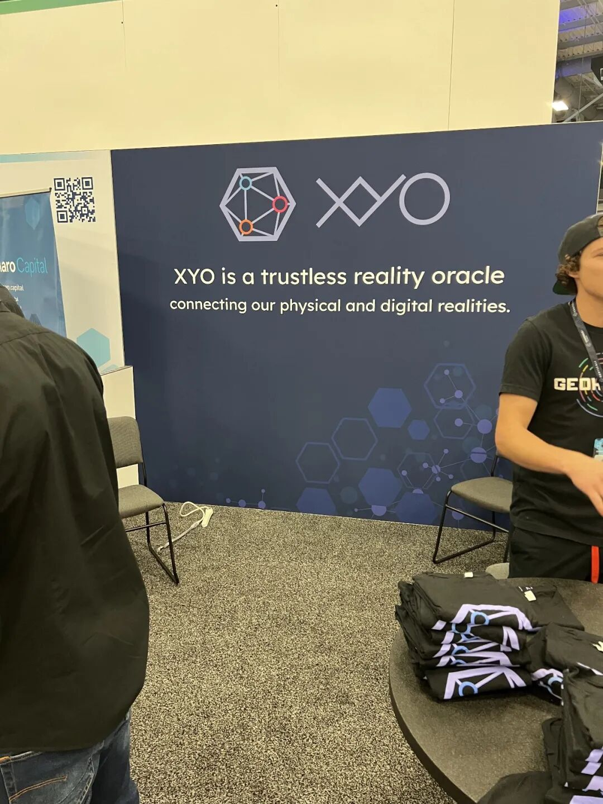
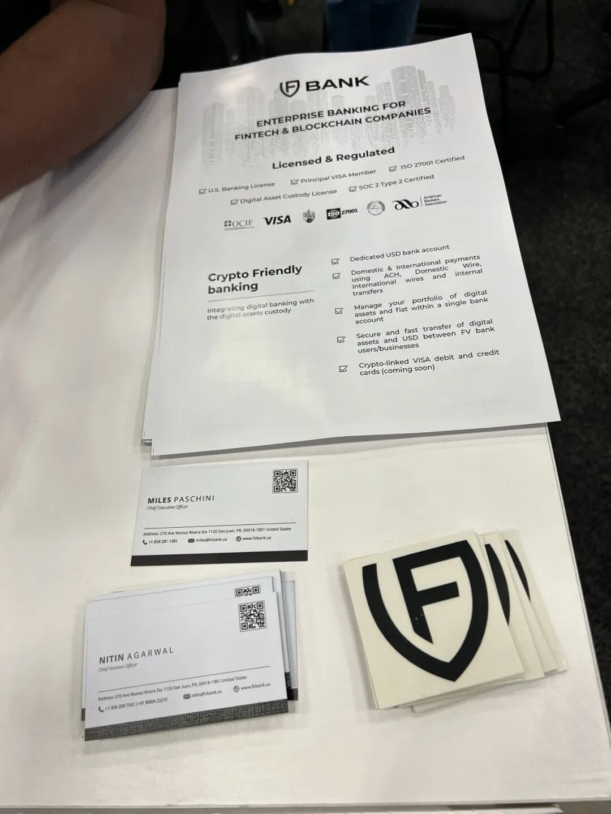
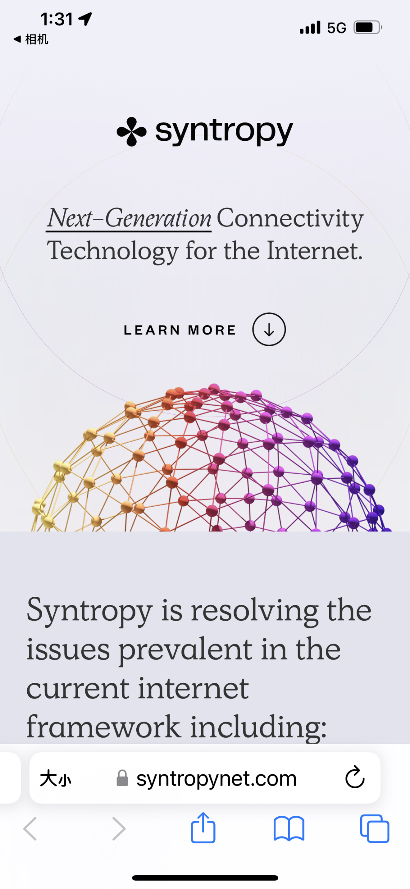
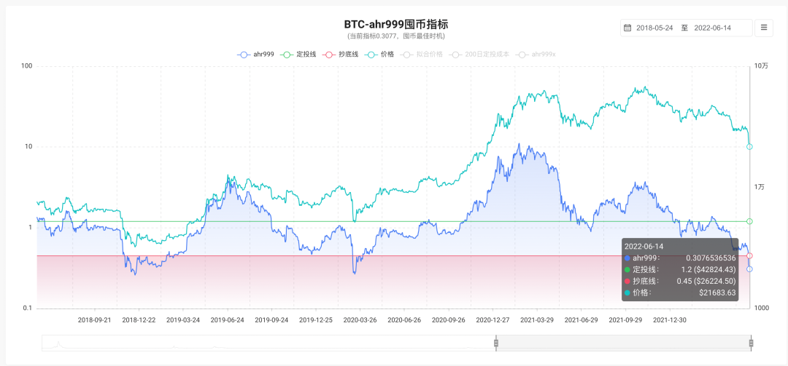
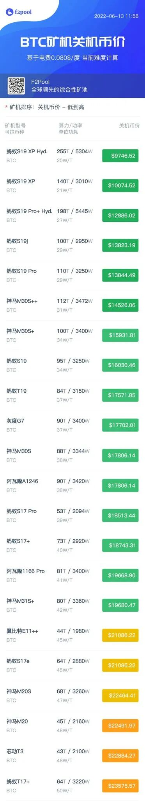

这几天去Austin参加了coindesk办的concensus大会，正好这几天大跌，两件事情给我个人的感触都挺多的，就想写篇文章，依次聊聊这两件事情。
Concensus大会
Concensus因为疫情的原因，过去两年都是在线上举办，今年因为疫情再也不是个事儿了，终于重新改成了线下举办。
总体来说这个会要比ethglobal的系列会，比如ethdenver等等会议更加偏business，比较注重综合性，内容也对新手比较友好，比较硬核的内容不多。
写到这里想顺便提一下我了解的各大crypto会议的异同。
如果是开发者，想要进入web3世界学习，我会比较推荐去ethdenver，或者其它的ethglobal办的线上或者线下的会议，比如eth amsterdam，eth cc paris，eth new york等等。这些会议开发者气氛很浓厚，也有对应的hackathon活动。
如果是bitcoin爱好者，可以去每年的bitcoin miami大会。
permissionless听说比较focus在defi这个细分领域，我还没去过不太清楚。
concensus偏商业，比较适合一个团队已经有了成熟的产品了，来这里找一些to b的客户进一步打开市场，或者寻找一些合作伙伴。展台偏贵（据说十几万美金），不是很平民化。
听说solana的活动开发者氛围也非常好，不过solana背后的vc氛围太浓厚了，散户了解了也赚不到钱，还是算了。
我个人没有怎么听会议里的讲座，绝大部分时间都在逛expo。借此了解到不少我之前不太了解的服务。
这里随便聊几个我还记得有印象的。
1.
fireblocks，是一家做钱包托管的业务。他们发展很快，已经从一年前的几十个人发展到现在好几百人的规模了。他们主要服务的是一些大的投资机构或者fund。据说类似于Google Venture等好几家有名的机构的钱包都是他们代为管理的。
那他们解决了一个什么问题呢？主要是分级管理的问题。比如一般性的钱包（Metamask之类），如果你拿到私钥，就可以动用里面所有的钱。但是Fireblocks的钱包可以给不同的用户有限的权限，这样基金公司就可以授予不同的基金经理管理一定量的钱的权限，而不用担心基金经理把所有的钱都卷走了。
这个主要是通过MPC的技术实现的。即把钱包的私钥分为2部分，一部分由操作人保管，一部分由fireblocks保管，只有两个partial的私钥拼起来才能做操作。
于是当一个人只有部分授权的时候，fireblocks就可以根据操作人的权限来选择性地给予fireblocks那部分的私钥的签名。
同时由于fireblocks永远只有partial的私钥，它也永远无法自行动用钱包里的钱。

2.
waev.com
他们是用智能合约来管理需要特定管理方式的数据。
比如传统上我们会把数据上传到aws 之类的地方，然后监管部门可能会要求公司对这些数据做一定方式的权限管理，但是由于这些权限都是可以任意修改的，所以很难保证数据不被滥用。
而如果把使用数据的方式和权限都用智能合约的方式规定好，这些数据在以后被使用的时候就不可能被滥用了。
waev.com做的就是这件事情。他们计划把数据存储到ipfs上，然后用以太坊上的智能合约来对这些存储在ipfs上的数据进行权限控制，这样用户就可以100%相信这些数据只能以智能合约指定的方式来被使用，真正把用户的数据的ownership还到了用户手中。
当然现阶段ipfs上数据的存储价格还是非常贵的，但是相信随着技术的发展，一切价格的问题肯定会被解决。

3.
dexible
他们可以帮你定制化一些你想要在链上执行的操作。
比如你想要当btc到1万的时候的时候，以5mins的时间间隔，定额从uniswap上用USDC购买WBTC。
你可以在dexible上定义好这一系列的操作，dexible会帮你自动执行。这样你就不用自己monitor价格，或者自己用bot来去做链上的自动化操作。
据说three arrows，polychain等等基金都在用他们的服务。

3.
xyo
他们可以提供无法伪造的gps位置。似乎是通过让蓝牙和gps设备的cross reference来实现的。他们计划用这种无法伪造的gps位置数据作为oracle数据的source之一。如果这个真的可以做到无法伪造，我觉得确实很有价值。

4.
fbank
他们是一家在波多黎各的银行，对于crypto相关的银行业务非常友好。
据说他们的钱包托管服务也用了fireblocks。

5.
syntropy
他们做了一个网络，网络中的参与者可以提供自己和别的地区节点的通讯速度数据来获得网络奖励。网络中有了这些数据以后，上网的人就可以知道数据从哪条路走最快，从而加速网络速度。
我感觉他们这个服务跟Deeper network有点相似处。

除了看expo之外，我还认识了不少新朋友，同时跟一些老朋友catch up了一下。
总体感觉大家对于web3长期还是非常看好的。
一方面我周围以前认识的别的行业的朋友，进入这个行业的越来越多了，人才加速涌入的现象非常明显。
另一方面通过参会，你会真真切切体会到这个行业还有大量未被解决的，但是非常值得被解决的问题。
这个可能说起来没什么，但是如果真的在会场，会有完全不一样的体会。所谓的区块链骗局，会在这种感受下不攻自破。
虽然我长期如此乐观，但是短期内，一级市场明显放缓（相比ethdenver时候的市场情绪来说），整体一级市场的估值也明显下降。
当然市场上还是有一些钱，不至于完全融不到钱，因此对于一级市场来说，可能熊市才刚刚开始。反观crypto的二级市场，已经熊了好几个月了。
聊到这儿，最后干脆谈谈现在的市场。
今天比特币大跌，已经到了我几个月前定的抄底线了。我之前预计的抄底线是25000-15000，分5笔资金。分别在25000，22500，20000，17500，15000这几个点位分批抄入。
之所以这么定，主要是因为25000开始就进入ahr999指数的抄底线，0.45以下了。而历史上历次周期，ahr999指数最低的位置大约在0.25(2018.12.16，2020.3.12)，差不多约合15000这个价位。

同时15000也是s19等等最新世代矿机的关机价格，从这个点位再往下跌的空间很小，因此我选择了这样一个抄底价格区间。

对于后市，我觉得可能会在ahr999指数0.25-0.45之间，也就是15000-25000之间盘整很长的一段时间，中间可能会有一些局部的行情，但是大的行情可能要等到下一个周期，也就是2024年减半以后才会再次开启了。
熊市漫漫，有人总结了熊市要经历的三个阶段。
https://twitter.com/jasonyanowitz/status/1536365738906202112?s=21&t=rJInBBzxRbZG9srNYIqbqw
第一阶段刚刚开始有大的调整，大家有点恐慌，但是还是有一些抄底行为，还有幻想。
第二阶段是真的跌得太猛了，大家很绝望。有很多大的公司裁员，甚至有不少开始破产了。
第三阶段是这个市场里大家都绝望了，都没什么人发声了，项目也开始没有声音了，也没有人讨论这个行业了。
目前还在第二阶段，熊市还有很长的路要走。从这个角度看抄底也不用太急，可以慢慢来，反正第三阶段还会走很久。
当然从长期乐观的角度看，未来的1-2年将会是web3真正获得大众adoption之前的那波熊市，也是最佳的修炼，积累和学习的时间。大家可以一起累计筹码，知识和技术，迎接下一波的技术大浪潮。
共勉
Twitter: https://twitter.com/xiaomaogy88